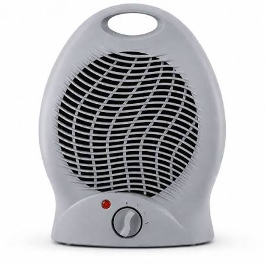

Prepare o café e acomode-se no sofá: a LG decidiu aplicar todo o seu DNA de inovação tecnológica no lugar mais inesperado possível. Apresentamos o LG WarmAir — o aquecedor de ambiente que prova que até o aconchego do seu lar pode ser de última geração. Design Minimalista & Aerodinâmica Avançada Com um chassi curvo em tom Titanium Gray e linhas fluidas inspiradas no design escandinavo, o LG WarmAir não é apenas um eletrodoméstico; é uma peça de decoração moderna. Sua grade frontal com padrão de ondas tridimensionais foi projetada em túnel de vento para otimizar o fluxo de ar, garantindo uma distribuição de calor mais rápida, silenciosa e uniforme pelo ambiente. Destaques Tecnológicos & Performance Motor Dual Inverter Thermal: Equipado com a renomada tecnologia Inverter da LG, o LG WarmAir ajusta a potência de aquecimento de forma inteligente para manter a temperatura ideal sem picos de consumo elétrico, economizando até 40% de energia em relação aos aquecedores tradicionais. Painel NeoControl com LED Indicador: O seletor anatômico intuitivo permite alternar entre os modos de ventilação, aquecimento brando (Nível 1 - 1000W) e aquecimento rápido (Nível 2 - 2000W), acompanhado pela luz guia SmartLED que indica o status de funcionamento. Conectividade LG ThinQ™: Controle a temperatura da sua casa antes mesmo de chegar. Compatível com Wi-Fi, comandos de voz (Google Assistente e Alexa) e automações de rotina pelo aplicativo no seu smartphone. Sistema de Segurança MultiShield 360°: O LG WarmAir conta com sensor antiqueda automático (desliga instantaneamente se for tombado), proteção contra superaquecimento e gabinete frio ao toque (Cool-Touch), ideal para casas com crianças e pets. Ergonomia & Portabilidade: Alça integrada ergonomicamente esculpida na própria estrutura e peso ultra leve para levar o conforto térmico da sala ao quarto com total praticidade. LG WarmAir: Life’s Good, especialmente nos dias frios.